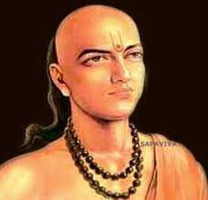
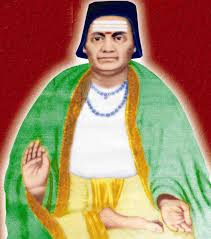
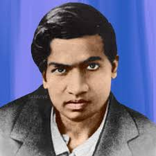

Mathematicians and Their History
AryaBhata

Aryabhata was born in 476 CE in Patna, Bihar, during the Gupta period. His birth name recorded but he was proficient in mathematics, astronomy.
. Pi (π) Value: Aryabhata approximated the value of pi (π) as 3.1416, which is more accurate than the Greek mathematician Archimedes.
. Zero and the Decimal System: Aryabhata used zero as a digit and developed the decimal system.
Bhaskara

Bhaskara, also known as Bhaskaracharya, was born in 1114 CE in Bijapur, Karnataka,during the Kalyani Chalukya period. Bhaskara's education is not well recorded, but his works suggest that he was proficient in mathematics, astronomy, and Sanskrit. Bhaskara was a dedicated Hindu and wrote numerous works on mathematics, astronomy, and philosophy.
.Mathematical Contributions: Bhaskara made significant contributions to algebra, arithmetic, and geometry, including solutions to quadratic equations and calculations of areas and volumes.
.Astronomical Contributions: He calculated the timing of eclipses and developed a new astronomical model.
.Infinity: Bhaskara was one of the first mathematicians to develop the concept of infinity.
Srinivasa Ramanujan

Srinivasa Ramanujan was born on December 22, 1887, in Erode, Tamil Nadu,to a poor Brahman family. Ramanujan's early education was at the local high school, where he showed a passionate interest in mathematics.
But, financial issues forced hi to drop out, he dropped out of college and continued to study mathematics. In 1913, Ramanujan sent his mathematical discoveries to a mathematician in Cambridge G.H. Hardy, who recognized his knoledge and invited him to Cambridge. Ramanujan's time at Cambridge was marked by significant contributions to mathematics.
.Number Theory: Ramanujan made substantual contributions to number theory,
.Mathematical Formulas: He developed numerous mathematical formulas, including the Ramanujan prime.